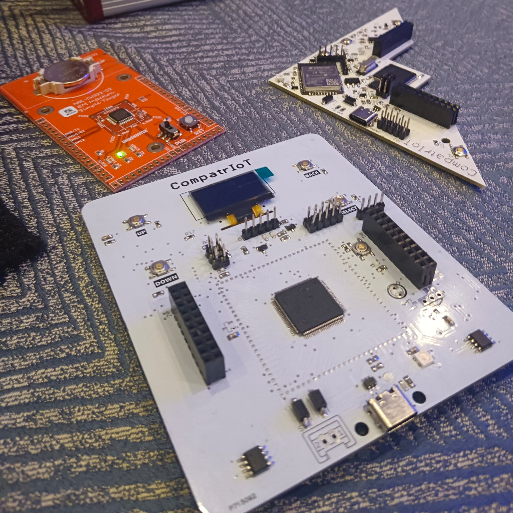
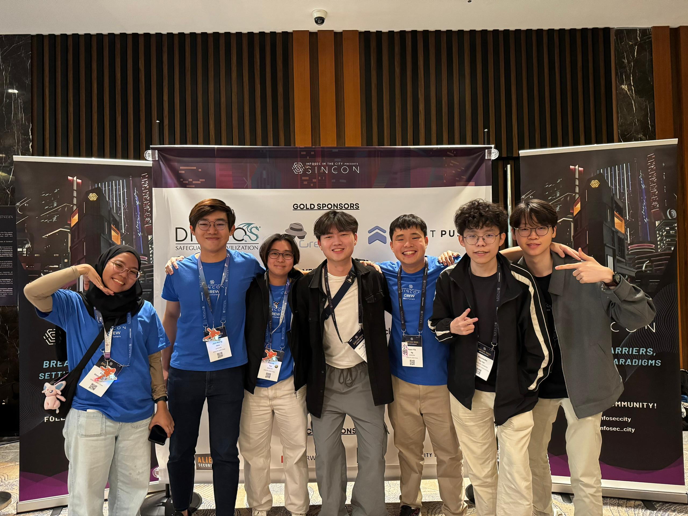
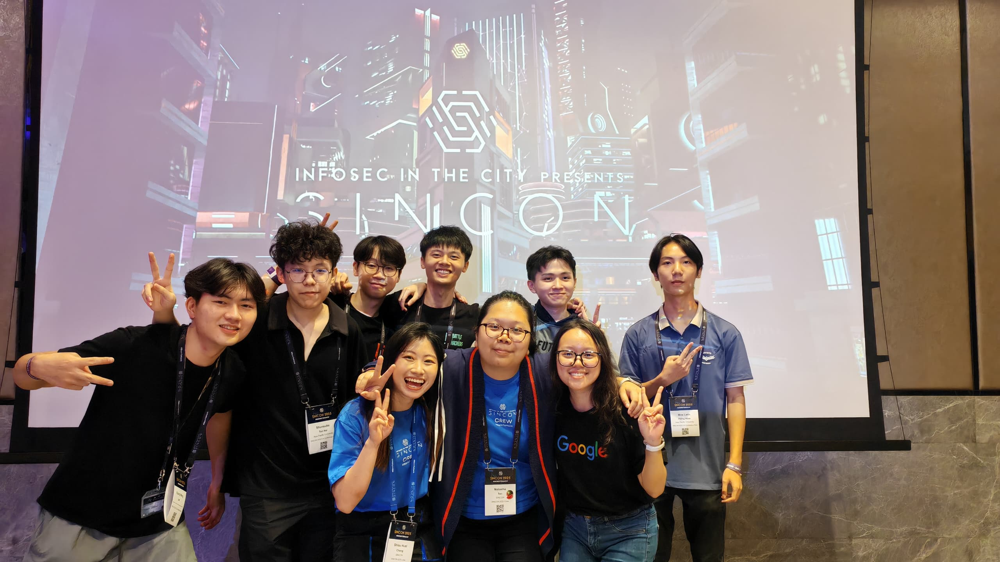

Soon entering into the halfway point of the year 2025, I was given an opportunity to go to SINCON 2025 together with my friends. This event was held over 2 days and includes multiple workshops, talks, kampungs, and interesting people to connect with. Here are some of the interesting activities that I have participated in.
"Hands-On with Active Directory Penetration Testing" by Sim Cher Boon
This workshop was really insightful for me as I have yet to delve deep into the field of active directory. I got to learn about various types of attacks which I have never even knew existed and also add a few tools to my arsenal for my next CTF. The workshop was presented in a way where we were given a CTF competition which we are guided from one challenge to another. The CTF competition was then moved to their Cyber Range Kampung later on which I spent quite a while there trying to even get at least half of the total flags. This shows how much I still have to improve on my active directory skills.
"Implementing Quantum-safe Secure Email" by Tan Teik Guan & Choy Shi Hong
This was a quick workshop by the Post-Quantum Kampung, which personally to me was my main interest throughout SINCON. The workshop demonstrated one of their product, Safequard, which encrypts and decrypts email using the post-quantum algorithm ML-KEM. After the workshop, I went to visit the Post-Quantum Kampung and got to meet with many people in the cryptography industry. Specifically, I got to learn more about the other products by pQCee, which gave me a new perspective on how quantum-safe cryptography can be achieved in a much more feasible manner and also to not become an design nightmare for the engineers.
Hardware Kampung
There was a CTF challenge hosted by the Hardware Kampung as well which piqued my interest especially since I always wanted to expand my skillset onto the more hardware level stuff. I got to learn how to brute force the serial speed, bluetooth attacks, and many more.

RFID Research Kampung and Car Security Kampung
I really enjoyed looking through the things presented by the RFID Research Kampung. Nevertheless, the Car Security Kampung was also interesting see with how they emulated the internal components. These two kampungs definitely gave me quite a few quirky ideas for my next few CTF challenges 😉.
"Unlocking Android Apps: A Deep Dive into Hacking and Security" by Abhinand N & Akilesh Kumar
Thankfully I had already built up some of my android hacking foundations, so the workshop was relatively manageable for me to follow along. At the much later part of the workshop, it was fascinating to see how Frida hooking can be used in such different ways to bypass or achieve certain conditions. This made me eager to immediately start polishing up my android hacking skills.
Meeting Up With Various People and Also Some Familiar Faces?
One of the greatest thing about events like SINCON is that I get to meet up with various kinds of people, whether if we have the same focus point in the field of cybersecurity. Talking with different people about different things is undoubtedly my goto way for obtaining unique inspirations, whether it be for a side project, CTF challenge, or just a point to research in. Fortunately as the event was held in Singapore, I got the chance to connect back with the Singaporean GCC members as well.

Afterwords
A very huge thank you to SherpaSec for sponsoring the tickets to SINCON 2025. It was an opportunity only made possible to have because of SherpaSec. And finally, here's another group photo to commemorate the occasion.
